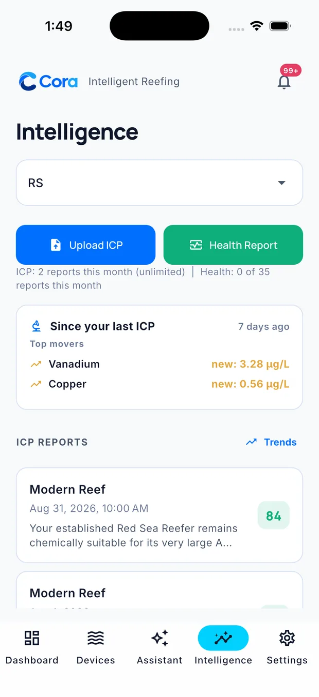
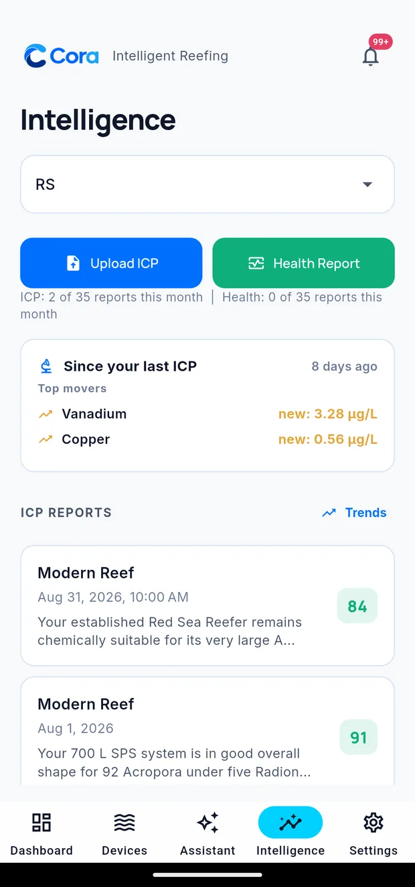

ICP and health reports
The Intelligence tab is your lab work and your long view.

Uploading an ICP test
Tap Upload ICP, pick your tank, and add the result from your lab. Cora reads the report, records every element, and lines it up against your previous tests.
You do not have to type anything in. Cora handles the common lab formats.

What you get back
A score for the report, and a plain-language summary of what it means for your system specifically — your tank type, your age, your livestock.
Every element tracked — not just the headline parameters. Trace elements, contaminants, the lot.
Top movers — the "Since your last ICP" card shows what changed most since last time, which is usually the fastest way to understand a new report.
Trends — tap Trends to see any element across every test you have uploaded. This is where ICP stops being a snapshot and starts being useful.
Health reports
A Health Report is a deeper periodic assessment of the whole system — every parameter, every source, your dosing, your history and your recent ICP results, considered together.
Tap Health Report and pick a tank. It takes a moment to produce.
Use it when you want a considered read rather than today's headline: before a big change, after a problem, or every few weeks as a check-in.
ICP against your probes
Cora compares your lab results with what your equipment reports. When your alkalinity probe says 8.4 and your ICP says 7.6, that is a fact worth knowing, and Cora surfaces it rather than quietly preferring one.
This is one of the most useful things an ICP does inside Cora. It is a third opinion, not an arbiter: laboratories differ from one another, and a sample's handling, storage and transit all move the result. Treat a single ICP as evidence — two tests agreeing is worth far more than one — and read a persistent gap as a reason to check the probe, not as proof the probe is wrong.
Your allowance
Both are metered by your plan. The line under the buttons shows what you have used this month.
Where reports live
The Intelligence screen keeps the two kinds separately: lab results under ICP Reports, and generated reviews under Health Reports. Each list is newest first with its score; tap one to reopen it in full.
Written for Cora Max 0.28.33 and Cora Mobile 0.5.54.
Still stuck? Email cora@coraiq.tech and we'll help.